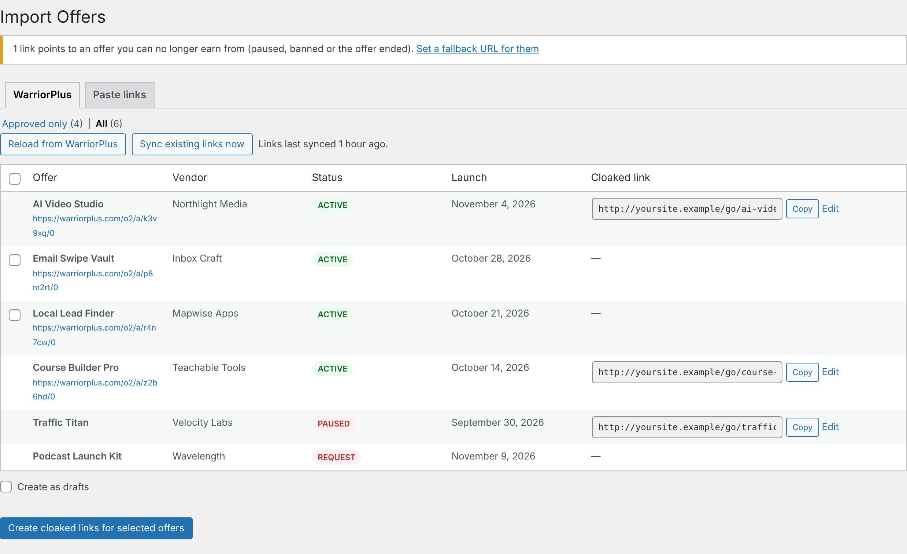
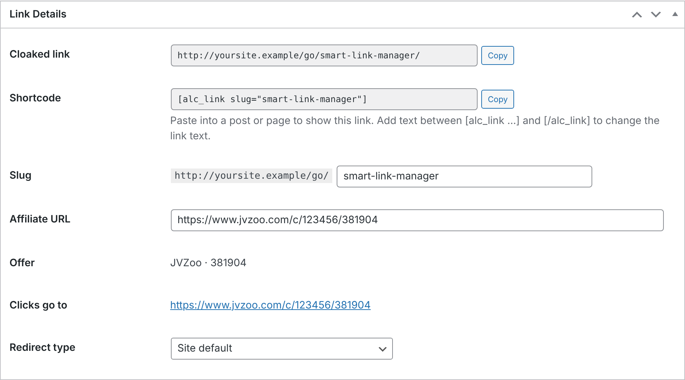

Guide
Install the plugin, connect your affiliate networks, and put your links to work.
Install
- Download aff-link-cloaker-x.y.z.zip from the latest release.
- In WordPress, go to Plugins → Add New → Upload Plugin, choose the zip and click Install Now, then Activate.
- Under Settings → Permalinks, choose anything except "Plain", so links look like
yoursite.com/go/offer-name/. With plain permalinks they still work, asyoursite.com/?alc=offer-name.
You need PHP 8.1 or newer and WordPress 6.4 or newer. On older PHP, the plugin shows a notice instead of running.
WarriorPlus
- On WarriorPlus, go to My Account → API Key and copy your key.
- In WordPress, open Affiliate Links → Settings, paste the key and save. Click Test WarriorPlus connection to check it.
- Open Affiliate Links → Import Offers. The WarriorPlus tab lists your offers. Approved only shows the ones you can promote now, and All includes pending and paused ones.
- Tick the offers you want and click Create cloaked links for selected offers.

To keep the key out of the database, add define( 'ALC_WARRIORPLUS_API_KEY', 'your-key' ); to wp-config.php instead.
Paste links
For any network, open Import Offers → Paste links and paste your affiliate links, one per line. Add a name with Name | URL:
Hosting Partner | https://hosting.example.com/?ref=you https://www.jvzoo.com/c/123456/381904
Links you already have are skipped. If you paste a network's page instead of your affiliate link, such as a WarriorPlus offer page, it's rejected with an explanation, because that link would earn you nothing.
JVZoo
JVZoo's API can't list the products you promote, so there are two ways to add them:
- The browser extension (recommended): reads your Approved Products page while you're signed in and creates all the links in one click. See JVZoo extension.
- Paste links: paste links like
https://www.jvzoo.com/c/<your ID>/<product ID>, or JVZoo's shortjvz1.com–jvz9.comlinks. Leave out the name and it's looked up from JVZoo.
Using your links
Every link has a cloaked URL and a shortcode, each with a Copy button, on the Affiliate Links list and on the link's edit screen.

- Anywhere: share the cloaked URL in emails, social posts and ads.
- In posts and pages: paste the shortcode. Change the link text by wrapping it:
[alc_link slug="ai-video-studio"]Try it free[/alc_link]. - Change the address: edit the Slug on the edit screen. Links you've already shared stop working if you do, so change it before sharing.
Shortcode links get rel="nofollow sponsored" and open in a new tab, which you can change in Settings.
Sub-IDs
Add anything after the link to see where clicks come from: yoursite.com/go/ai-video-studio/facebook/. Sub-IDs show in your click log. JVZoo links also pass them to JVZoo as ?tid=facebook, so they appear in your JVZoo stats. In a shortcode, use subid="sidebar".
Sync and dead offers
Twice a day, the plugin checks your WarriorPlus offers. It updates affiliate links and offer names, unless you renamed the link, and flags links you can no longer earn from because you were paused or banned, or the offer ended. You can also click Sync existing links now on the Import Offers screen.
Set a Fallback URL in Settings, such as a page with your current recommendations, and clicks on those links go there instead.
Settings
| Link prefix | The go in /go/offer/. Changing it breaks links you've already shared. |
|---|---|
| Fallback URL | Where clicks on dead offers go. |
| Default redirect | 307 is recommended. 301 can be cached by browsers, so changes may not reach people who've clicked before. |
| Shortcode links | nofollow, sponsored and opening in a new tab. |
| Tracking | Count clicks, ignore bots, and pass query strings through to the offer. |
| Uninstall | Whether deleting the plugin also deletes your links and click history. |
Updating
Download the new zip and upload it under Plugins → Add New → Upload Plugin. When WordPress asks, choose Replace current with uploaded. Your links, clicks and settings are kept, and any data changes run automatically.
Uninstalling
Deactivating keeps everything. Deleting the plugin only removes your links, click history and settings if you ticked Delete all links… under Settings → Uninstall first.